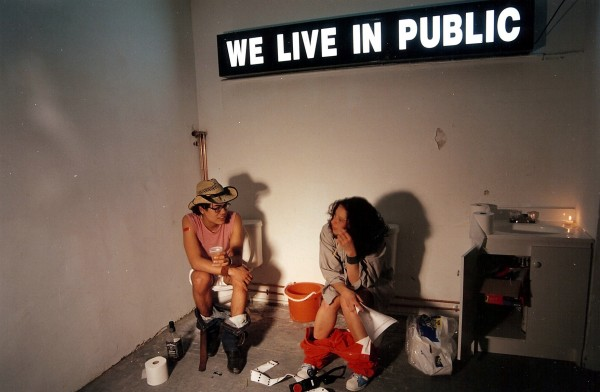
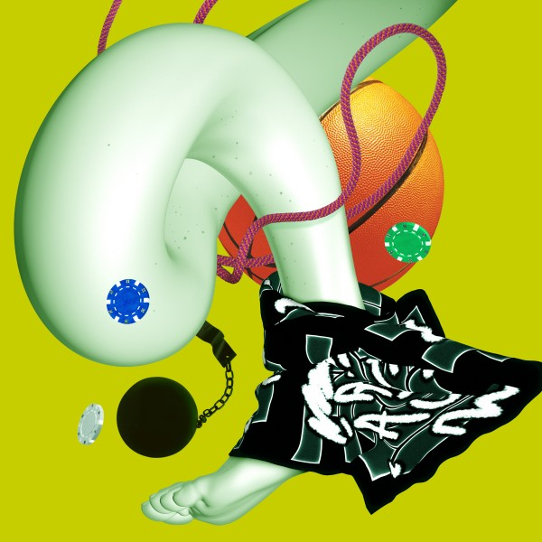
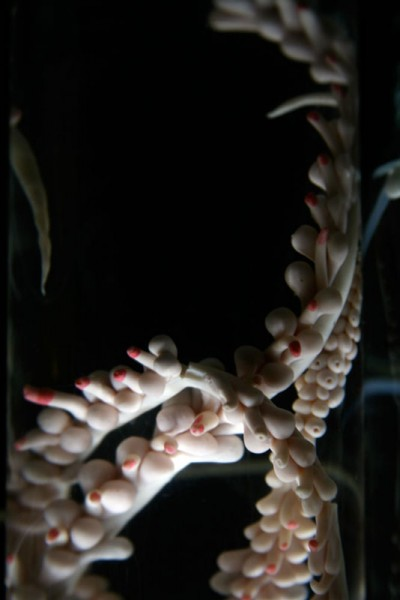
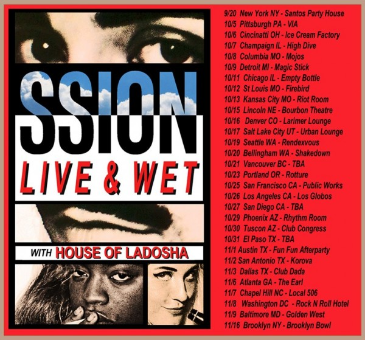

-
Selection No. 2
by Mitch Moore September 5, 2012
still from ‘We Live In Public,’ courtesy of Indie Pix Films.
1. Upon Netflix’s suggestion, I checked out We Live In Public (2009) documentary about Josh Harris, the Internet prophet of the late 1990s who developed pre-broadband predecessors to social media broadcast sites like Youtube, and Hulu. The documentary follows Harris through his life, and primarily focuses on his famous art/life experiments called “Quiet: We Live In Public,” an Orwellian social experiment designed to observe the effects of complete surveillance on a community, and weliveinpublic.com, a website that broadcasted Harris and his girlfriend’s life for over a year. I found the documentary fascinating for its portrayal of Harris as a cyberspace Candide, one who explores the internet’s darkest impacts on the soul and retreats to a farming village in Ethiopia in an effort to restore his naivite and innocence. Harris’s lunacy is unsettling considering the fact that most of the population is finally catching up to his prophesized reality of life and human relationships after the Internet.
recent photo of Yulia Tymoshenko in prision. AFP/Getty Images.
2. Someone needs to make a biopic about this woman! Yulia Tymoshenko, the former Prime Minister of Ukraine and current political jailbird has become globally infamous as controversy builds around her imprisonment. As scandalous as her politically motivated trial may be, it is Tymoshenko’s post-Kardashian use of propaganda that has made her an icon of the moment. I am fascinated by everything she does and says — her trademark ‘peasant braid’, her meticulously composed photo ops, her 20-day hunger strike, her outrageous digs at opponents (most recently calling them “Mafia Godfathers”). I await every move of Tymoshenko’s saga.
still from ‘Beasts of the Southern Wild,’ courtesy of A Fistful of Culture.
3. Beasts of the Southern Wild asserts a kind of cinematic critique at timely moment in American culture. Set outside the New Orleans’s levies, Beasts Of The Southern Wild depicts a community that exists entirely outside the American paradigm of commercial living and education. The characters nobly exhibit founding American virtues like self-reliance, perseverance, brotherhood, and individual freedom, and they maintain these virtues in spite of the cultural influence of a contemporary America that exists just beyond the levies. The film perverts our 21st century understanding of the ‘American Way’ by imagining a community that more closely resembles Thomas Payne’s America. In a problematic election year that implores us to consider progress, as a return to America’s mythological hey day, Beasts offers a complicated, human glance into the fragile balance of life that might come to pass in the wake of commercial progress.
Arca’s ‘Stretch 2,’ courtesy of UNO NYC.
4. Arca’s music is a kind of challenge to the soul. On the surface, one hears fuckery of glitchy, chopped-up samples, but pulsing through these mechanical rhythms are hauntingly tweaked vocals and evocative ambient compositions. Stretch 2 (out on UNO NYC), Arca’s first full-length album, invites this challenge more expansively by unexpectedly fusing genre, rhythmic patterns, and a variety of emotional appeals over nine tracks. A kind of reckoning is embedded within the first listen –- it’s a confrontation with the sublime through the haze of hectic and aggressive textures. To love Arca’s music is to have a relationship with it. The listening process becomes a metaphor for seeing a soul shine through the restraints of inner chaos.

image by Luca Finotti. courtesy of Dust Magazine.
5. Once and a while, a magazine will arrest my attention and shape my way of looking at an aspect of culture. DUST Magazine, a photography magazine run by Luigi Vitali, assembles photographs from the world’s most in-tune and out-there photographers. By bringing together international photographers whose work similarly exhibits the attitude and sexuality of urban male youth, DUST actively curates a way of looking globally at sex and style in bleak urban environments.

Emoji phraseology
6. Just as my text communication patterns were becoming hopelessly minimal, Emoji came along a relief from the restriction of words and their limited literal meanings. Emoji are a more expansive kind of emoticon language, and used in combination with text, can add just enough personality to infuse a truncated message with more complex meaning. Emoji put personal expression back in the hands of the user, and allows us to convey more with less. In my experience, using images to communicate makes text conversation feel more direct and interpersonal because both parties feel clued in to the code. I hope Emoji eventually expands its vocabulary to a point where humans can return hieroglyphic communication.
Boy Child. courtesy of the artist.
7. Boy Child is one of the most riveting performers I have ever seen in my life. Stunningly androgynous and statuesque, Boy Child’s enigmatic physique alone is transfixing. She incorporates Butoh, drag, and powerful physical instincts into her performance. The combined effect of her presence, physicality, and expression left me speechless and emotional. Boy Child’s impact lies beyond the realm of language — she makes you feel a kind of visceral empathy that evades understanding. The most incredible feelings arise when you step back to realize that Boy Child is actually human. Her performance is so powerful that her physical form begins to feel like a shell, and that a sublime figure is trying to emerge. Boy Child performed last night in New York, at Westway’s West Gay party.
courtesy of CRUFT.
8. SUPERMAMMAL is the most incredible work of art I have heard of this year. A friend told me about it over the summer, and later showed me pictures. SUPERMAMMAL is the title given to a hypothetical organism made up of only equisite synthetic genitalia, creating a creature that is ‘polygenital , hypersexual and of no fixed gender.’ The brainchild of CRUFT, an art collective that uses digital technologies in order to question the nature of today’s society, SUPERMAMMAL is a snake-like video game wherein the goal of the game is to add as many genitals as possible, while avoiding de-segmentation.
SSION & House of Ladosha’s American tour, 2012.
9. SSION and House of La Dosha take their iconic acts on a 30-date US tour. SSION is the queer musical collective led by vocalist Cody Critcheloe, brought to New York via Kansas City. Anticipating the release of his Bent LP, SSION sets out on a cross country crawl, kicking off with an album release show at Santos Party House this month. Cody and Co. will surely bring some incredible visuals and fun to the party. Critheloe is joined by the drag rap-duo Dosha Devistation and Cunty Crawford (Antonio Blair and Adam Radacovich respectively) to go Pan-Am HAM for kids across the country. Should be nothing less than legendary!
courtesy of TLC.
10. I’m anticipating Breaking Amish more than any other fall show this year. The series will follow five Amish youth who go to New York for their Rumspringa –- the Amish right of passage where adolescents leave their communities to spend time in the outside world. The idea of broadcasting these kids’ exploits during their sacred rite of passage is so beautifully debased, I could cry. It is extreme, even for TLC. Nevertheless, I am fascinated. I look forward to tracking each character to see how far their desire for independence leads them. I’m especially excited for their testimonials. “What will they think of us?” is a much more intriguing question than, “What should I think of them?”